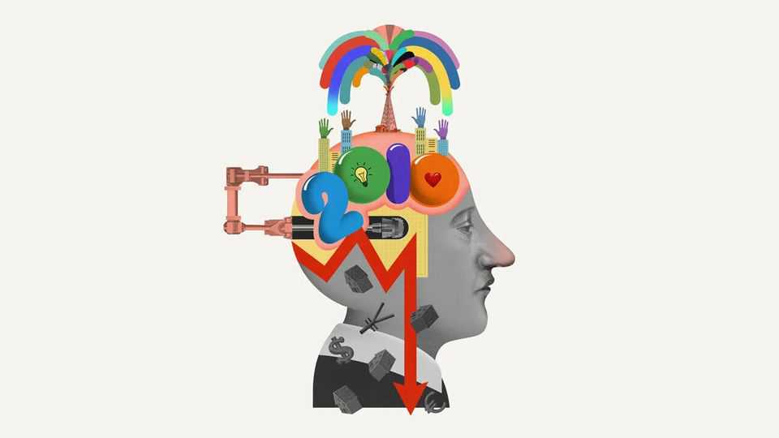

How the 2010s remade business
The revolutionary decade deserves a revisionist eye

Oct 22nd 2026
As decades go, the 2010s were an embarrassment. Tech bosses, now preoccupied with artificial-intelligence models and rockets, talk dismissively of the consumer apps they built back then. Bankers spent it in the drunk tank. After a long summer of executive exuberance, the 2010s were, in many corner offices, a winter of discipline: imposed by governments, the public, activist investors and boards. Yet this decennium horribile has far more to say about business today than the tales from the 1870s, 1920s or 1990s that investors tell themselves. Were the 2010s a cringeworthy decade? Certainly. But a revolutionary one nonetheless.
Silicon Valley is ripest for 2010s-revisionism. How is it that America can undertake an enormous, energy-intensive construction boom on a scale never before seen, unbothered by war in the Middle East? Thank the 2010s. Because of the shale revolution, America ended the decade as a net exporter of energy for the first time in more than half a century. And that endless well of capital now funding the construction of data centres? After the financial crisis, speed limits were imposed on banks and the global lending system was transformed. Many of the capital-markets tricks used today, from special-purpose vehicles to offshore insurance capital, were tried and tested in the 2010s.
If this gamble pays off, it will be because AI has revolutionised white-collar work. It is impossible to understand office life without understanding the 2010s. Back then politicians fretted about the gig workers of Uber (2010) or DoorDash (2013). But office life was changing far more. Workers were ordered by the lanyard-Stasi to bring their whole selves to work. When they arrived at the soft-furnished panopticon that is the modern office they built “dashboards” using Datadog (2012) or Snowflake (2014), took Zoom (2013) calls from “hot desks”, perhaps in a WeWork (2010), to the sound of distant machine-gun fire from Slack (2013) messages.
When it was happening, the 2010s felt like an age bereft of new business thinking. How wrong that has proven. Effective altruism is a philosophy whose exacting ethical calculus grasps at the universal, but which could have come only from the cloisters of Oxford and Stanford in the early 2010s. The content of its ideas is set out on LessWrong (2009), an online message board, and put into practice by charities like 80,000 Hours (2011). It is now the dominant philosophy of Silicon Valley AI labs, which makes it easily the most influential management idea out there.
Politicians likewise find plenty of ideas left on the shelf from the revolutionary decade. Universal basic income was a fringe idea in the equality-obsessed 2010s but is now talked about as serious policy in the AI-obsessed 2020s. The big-is-bad school of antitrust, embraced on both left and right, is a creation of prestigious American law schools during the mid-2010s. Across the rich world, wealth taxes have become a favourite policy of the left. The central ideas were set out by Thomas Piketty and Gabriel Zucman, a pair of French economists, in the 2010s.
2010s attacks are best repelled by 2010s defences. Anthropic and OpenAI are both structured as public-benefit corporations, a form that, in theory, makes it easier to balance the interests of society and shareholders. Both labs are incorporated in Delaware—under rules from 2013. In 2019 the Business Roundtable, a powerful CEO-lobby group, announced that a firm’s shareholders would henceforth yield to its stakeholders. Today it reads like an artefact from the high point of corporate high-mindedness. Yet its power endures. This week Anthropic pledged 5% of its shares to non-profit causes. SpaceX is also giving stakes to the public. To misquote Marx, businessmen do not make history as they please, but under conditions passed down to them from the 2010s.
Not every big idea from the 2010s survives in full. Central banks’ policy of keeping interest rates around zero ended in 2022. Zealous corporate social-justice campaigns are fewer than before. Still, there are corners of commerce which keep the unreformed 2010s alive. Private-equity funds are devising ways to avoid returning money to their backers, lest they face the post-2010s world. Europe still clings to ESG. So do consultants. McKinsey’s studies of women and ethnic minorities in the workplace were the sacred texts of that era. This month the consultancy demoted a partner for publicly questioning similar ideas. Bain, a rival, recently wrote that “77% of US customers say they are concerned about environmental sustainability, up from 69% last year.” If you say so. Like Japanese soldiers who ignored the end of the second world war, some hardliners from the B-Corp battalion fight on.
It is difficult to imagine a wave of nostalgia for the 2010s like that for the 1990s and 2000s. What is there to be nostalgic for? A golden age of gas won’t cut it. A golden age for streaming, maybe. The big beasts of music—Taylor Swift, Drake, etc—have the same ageless commercial quality as the Marvel superhero franchise.
But interest in the 2010s will surely grow. The euro zone, which spent much of the 2010s in crisis, now stands on the brink of another. Understanding Silicon Valley means understanding the 2010s. “The Social Reckoning”, a new film about Facebook, is but one of a stream of 2010-gazing works. A series will soon be released about Sam Bankman-Fried, a late-2010s crypto fraudster (interviewed from prison this week by The Economist for our “Money Talks” podcast). Elizabeth Holmes, another 2010s fraudster, also stars in a new film. Then there’s Elon Musk, the world richest man, and now the subject of one of the world’s longest documentaries. His flying car is the antidote to the 2010s mantra that all we ended up with is 140 characters. Yet Mr Musk is also an electric-car magnate whose power derives from a lawless social network. A man of his age? Absolutely: a man of the 2010s. ■